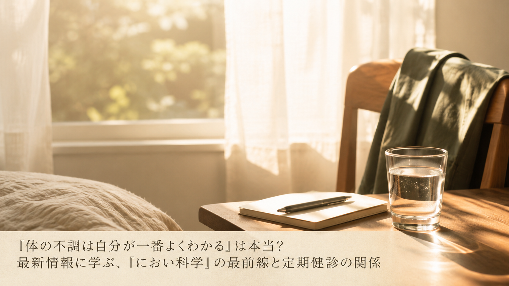

「体の不調は自分が一番よくわかる」は本当？最新情報に学ぶ、『におい科学』の最前線と定期健診の関係
「体の調子が悪ければ、自分が一番よく気づくはず」——そう思っている方も多いのではないでしょうか。2026年6月、大学の名誉教授が主宰する公開セミナーで、体から発せられる"におい"を手がかりに体調の変化をとらえる研究が取り上げられ、話題になりました。今回は中高年の方にも分かりやすく、そのポイントをご紹介します。

セミナーが紹介する「におい科学」という視点
- 私たちの体は、皮膚や呼気から数百種類ともいわれる微量な成分を絶えず放出しており、そこに体調や代謝の変化が映し出されている可能性があると説明されている。普段は意識することのない体からの情報が、実は多くのことを語っているかもしれないという視点が紹介されています。
- においを手がかりに体調の変化をとらえる研究は、AIやセンサー技術と組み合わせることで、日常的な健康管理に役立つ新しい手法として研究が進められていると紹介されている。大学と企業の連携による実用化に向けた取り組みも始まっていると述べられています。
- 採血のように体へ負担のかかる方法に頼らず、日々のコンディションを把握する仕組みづくりが期待されていると説明されている。将来的には、より身近な形で体調を見守る手段が広がっていく可能性があるとされています。
中高年の私たちが意識したいこと
このセミナーが伝えているのは、特別な機器がなければ体調管理ができない、ということではなく、体は日々小さなサインを発しているという事実に、あらためて目を向けるきっかけになる、という視点です。日々の生活の中では、次のような一般的に知られている習慣が、体調の変化に早めに気づく助けになるとされています。
- 普段と違う体のだるさや疲れやすさなどの小さな変化を、「年のせい」と決めつけず気に留めてみる
- 睡眠の質や食欲、体重の変化など、体調の目安になる項目を無理のない範囲で記録してみる
- 年に一度など、定期的な健康診断を継続して受ける習慣を大切にする
※上記は一般的な健康習慣としてよく紹介される内容であり、特定の症状の発見や治療、予防を保証するものではありません。
本記事は、サイアンスアカデミーが2026年6月19日に発表したプレスリリース「『からだの臭いで健康診断!?』 そんな未来のヘルスケアの実用化について におい科学の第一人者、関根 嘉香教授がオンライントーク」の内容を要約・紹介したものです。詳しい内容は出典元をご確認ください。
出典：サイアンスアカデミー プレスリリース（アットプレス配信、2026年6月19日）
出典：サイアンスアカデミー プレスリリース（アットプレス配信、2026年6月19日）
本記事は健康に関する一般的な情報提供を目的としたものであり、医学的な診断・治療・予防を目的としたものではありません。記載内容は出典元の見解の要約であり、当社（株式会社BISII）独自の見解や、当社が販売する製品の効果を示すものではありません。気になる症状がある場合は、医療機関へご相談ください。
当社では、日々のコンディショニングをサポートする空間電位ケア機器「DENBA Health」をご紹介しています。
DENBA Healthについて見る最終更新日：2026年7月7日